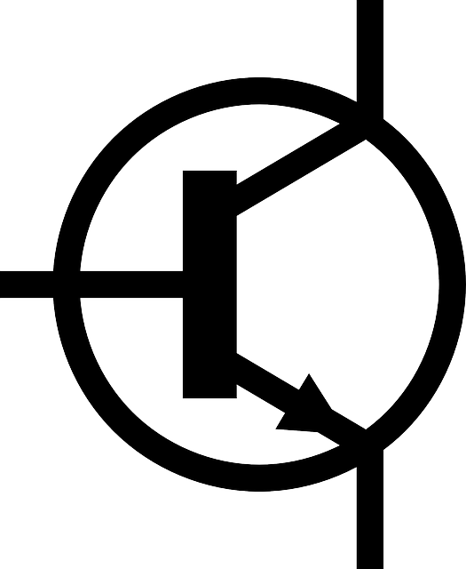

Es un componente electrónico capaz de excitar los circuitos o de realizar ganancias o control del mismo. Son, en general, los generadores eléctricos y ciertos componentes semiconductores .
Los componentes activos semiconductores son derivados del diodo de Fleming y del triodo de Lee de Forest. Primero se inventaron las válvulas, lo cual permitió desarrollar dispositivos electrónicos como la radio y el televisor. Luego se desarrollaron los semiconductores, los cuales luego dieron paso a los circuitos integrados, entre ellos los circuitos programables como los microprocesadores.
En la actualidad existe un número elevado de componentes activos, siendo usual, que un sistema electrónico se diseñe a partir de uno o varios componentes activos cuyas características lo condicionará. Esto no sucede con los componentes pasivos.
Amplificador operacional
Un amplificador operacional (A.O.) es un circuito electrónico (normalmente se presenta como circuito integrado ) que tiene dos entradas y una salida. La salida es la diferencia de las dos entradas multiplicada por un factor (G) (ganancia): �Vout = G·(V+ - V-)
Diodo
Un diodo es un dispositivo que permite el paso de la corriente eléctrica en una única dirección. De forma simplificada, la curva característica de un diodo consta de dos regiones, por debajo de cierta diferencia de potencial, se comporta como un circuito abierto (no conduce), y por encima de ella como un circuito cerrado con muy pequeña resistencia eléctrica. Debido a este comportamiento, se les suele denominar rectificadores, ya que son dispositivos capaces de convertir una corriente alterna en corriente continua.
Diodo Zener
Un diodo Zener, es un diodo de silicio que se ha construido para que funcione en las zonas de rupturas. Llamados a veces diodos de avalancha o de ruptura, el diodo zener es la parte esencial de los reguladores de tensión casi constantes con independencia de que se presenten grandes variaciones de la tensión de red, de la resistencia de carga y temperatura.
Pila
Se llama ordinariamente pila eléctrica a un dispositivo que genera energía eléctrica por un proceso químico transitorio, tras de lo cual cesa su actividad y han de renovarse sus elementos constituyentes, puesto que sus características resultan alteradas durante el mismo. Se trata de un generador primario. Esta energía resulta accesible mediante dos terminales que tiene la pila, llamados polos, electrodos o bornes. Uno de ellos es el polo positivo o ánodo y el otro es el polo negativo o cátodo.
Transistor
El transistor es un dispositivo electrónico semiconductor que cumple funciones de amplificador, oscilador, conmutador o rectificador. El transistor consta de un sustrato (usualmente silicio) y tres partes dopadas artificialmente que forman dos uniones bipolares, el emisor que emite portadores, el colector que los recibe o recolecta y la tercera, que está intercalada entre las dos primeras, modula el paso de dichos portadores

TRIAC
Un TRIAC o Triodo para Corriente Alterna es un dispositivo semiconductor, de la familia de los transistores. La diferencia con un tiristor convencional es que éste es unidireccional y el TRIAC es bidireccional. De forma coloquial podría decirse que el TRIAC es un interruptor capaz de conmutar la corriente alterna. Su estructura interna se asemeja en cierto modo a la disposición que formarían dos SCR en antiparalelo. Posee tres electrodos: A1, A2 (en este caso pierden la denominación de ánodo y cátodo) y puerta. El disparo del TRIAC se realiza aplicando una corriente al electrodo puerta.